262 — Capacity planning, cuotas y gestión de demanda
Parte: 21 — Operación cloud, automatización y respuesta a incidentes
Nivel: avanzado · Horas estimadas: 4
Laboratorio: capacity · Estado: EXECUTABLE_CORE
🎯 Propósito
Planificar capacidad en un entorno elástico, donde el problema ya no es comprar máquinas sino saber dónde está el límite antes de chocar con él. La clase da el método —encontrar el recurso que satura primero, medir el codo, proyectar la demanda—, el inventario de cuotas que causa la mayoría de las sorpresas, y las palancas para gestionar la demanda cuando la capacidad no da.
📚 Resultados de aprendizaje
Al finalizar podrás:
- Identificar el recurso que satura primero en cada servicio.
- Medir el codo con una prueba de carga que sirva para decidir.
- Proyectar demanda con crecimiento, estacionalidad y eventos.
- Inventariar las cuotas que limitan antes que la capacidad.
- Gestionar la demanda cuando la capacidad no puede crecer.
🧩 Conceptos centrales
| Concepto | Comprensión verificable |
|---|---|
recurso limitante |
El que satura primero. Determina el límite del servicio; ampliar cualquier otro no sirve de nada. |
codo |
Punto en que la latencia deja de crecer despacio y se dispara. El límite útil, no el teórico. |
cuota |
Límite impuesto por el proveedor o por la organización. Suele llegar antes que el límite físico. |
margen |
Distancia entre la carga actual y el codo. Se dimensiona por el tiempo que se tarda en reaccionar. |
gestión de demanda |
Reducir o aplanar la carga en vez de aumentar la capacidad. |
vertido de carga |
Rechazar parte de la demanda deliberadamente para que el resto siga funcionando. |
🧠 Modelo mental
Operar es controlar cambios bajo incertidumbre: inventario, señal, diagnóstico, acción reversible y aprendizaje deben formar un ciclo cerrado.
Aplicado a esta clase, separa siempre cuatro planos: intención (qué necesita el usuario), configuración (qué declaramos), estado observado (qué existe de verdad) y evidencia (cómo sabemos que cumple). Confundirlos produce diseños que se ven correctos en un diagrama pero fallan al operar.
🗺️ Flujo de razonamiento

📖 Desarrollo
1. Encontrar el recurso limitante
La elasticidad no elimina la planificación de capacidad: la traslada. Ya no se planifica cuándo comprar, sino dónde está el techo y cuánto se tarda en llegar.
CADA SERVICIO TIENE UN RECURSO QUE SATURA PRIMERO
y casi nunca es la CPU, aunque sea lo que todos miran
candidatos, por frecuencia real
conexiones a la base clase 207
memoria clase 213
IOPS o rendimiento del disco clase 190
ancho de banda o paquetes por segundo clase 198
cuota del proveedor clase 217
una dependencia aguas abajo clase 185
un bloqueo o una partición caliente clase 208
el número de hilos o de sockets
y la CPU, sí, pero menos veces de lo que se cree
→ y ampliar lo que no es el limitante no cambia nada
→ y esto explica el incidente de la clase 258: añadir una
réplica de lectura no mejoró nada porque el limitante
era un disco degradado
Y cómo se identifica, que no es adivinando:
SE CARGA HASTA ROMPER Y SE MIRA QUÉ SE ACABÓ
y se mira CUANTO hay, a la vez, no solo lo sospechoso
y el patrón revelador
la latencia se dispara MIENTRAS la CPU está al 40 %
→ entonces el limitante es una espera, no un cálculo
→ conexiones, bloqueos, dependencia, cuota o disco
y la trampa de escalar
añadir instancias multiplica las conexiones a la base
→ y el limitante empeora al escalar
→ el escalado automático puede tumbar la base
clases 207, 212
Y la ley de Little, que evita muchas pruebas:
concurrencia = tasa de llegada × tiempo de servicio
1.000 peticiones/s × 0,2 s = 200 en curso
→ y si el grupo de conexiones tiene 50, ese es el techo
→ 50 / 0,2 = 250 peticiones/s como máximo
→ y con esta cuenta se descubren techos sin cargar nada
→ y explica por qué una dependencia más lenta reduce el
caudal aunque nada falle clases 201, 261
2. El codo y el margen
El límite útil no es donde el sistema deja de responder: es donde deja de responder bien.
LA CURVA
carga baja latencia plana
carga media latencia sube despacio
EL CODO latencia se dispara
más allá colas, plazos, cascada
→ y entre el codo y el fallo total suele haber muy poco
→ el codo típico está entre el 60 % y el 80 % de
utilización del recurso limitante
→ nunca en el 100 %
y por qué
a medida que la utilización se acerca a 1, el tiempo de
espera crece de forma no lineal
→ al 50 % de utilización, la espera es comparable al
servicio
→ al 90 %, es unas nueve veces mayor
→ planificar «al 95 % de uso» es planificar el desastre
Y cómo se mide de forma que sirva:
PRUEBA DE CARGA ÚTIL
con tráfico REALISTA en forma, no solo en volumen
→ mezcla de operaciones, tamaños, distribución de
claves clase 208
con datos de tamaño realista
→ una base con 10.000 filas no se parece a una con
400 millones
subiendo por escalones y esperando estabilización
midiendo latencia por percentiles, no la media
y ANOTANDO qué recurso se acaba en cada escalón
y qué NO sirve
medir el máximo de peticiones por segundo sin mirar la
latencia
→ ese número siempre existe y nunca es útil
Y cómo se dimensiona el margen:
EL MARGEN SE MIDE EN TIEMPO, NO EN PORCENTAJE
«¿cuánto tardamos en añadir capacidad?»
escalado automático 1-3 minutos
cuota que hay que solicitar horas o días
capacidad reservada días
rediseño semanas
→ y el margen debe cubrir el crecimiento durante ESE
tiempo, más el pico
y la pregunta que ordena todo
«si el tráfico se duplicara ahora mismo, ¿qué se rompe
primero y en cuánto tiempo?»
→ si no se sabe responder, no hay plan de capacidad
Y las tres alertas de capacidad que hacen falta:
proximidad al codo del recurso limitante
proximidad a cada CUOTA relevante
y tendencia: «a este ritmo, se llega en N días»
→ la tercera es la única que da tiempo a reaccionar
clase 256
3. Cuotas: el techo que llega antes
En la nube, la mayoría de los topes con los que se choca no son físicos. Son cuotas.
CLASES DE CUOTA
por cuenta o suscripción
por región
por servicio
por operación (peticiones por segundo a la API de
control)
y algunas ajustables, otras no clase 217
DÓNDE APARECEN, con más frecuencia
direcciones IP públicas y elásticas
núcleos por familia de instancia y por región
reglas por grupo de seguridad y grupos por interfaz
conexiones concurrentes al balanceador
invocaciones concurrentes de funciones clase 214
rendimiento provisionado de tablas y colas
peticiones por segundo a la API de gestión
→ y esta es la que sorprende a la infraestructura
como código clase 128
cuotas de servicios gestionados de datos y de IA
clase 248
Y lo que hace que las cuotas causen incidentes:
1 SON POR REGIÓN
se amplía en una y se olvida la de conmutación
→ y la conmutación falla justo cuando se necesita
clase 187
2 SON POR CUENTA
y el equipo que las consume no es el que las pidió
→ un entorno de ensayo puede agotar la cuota de
producción si comparten cuenta clase 219
3 NO AVISAN
se llega al 100 % sin señal previa, salvo que se
configure
4 Y SE AMPLÍAN CON RETRASO
de horas a días, y a veces con negociación
→ pedirla durante el incidente es tarde
EL INVENTARIO MÍNIMO
qué cuotas nos afectan, por región y por cuenta
cuál es el valor actual y cuál el consumo
cuál es el plazo para ampliarla
y alerta al 70 % y al 85 %
→ generado automáticamente, no mantenido a mano
Y el caso especial de la cuota del plano de control:
las herramientas de infraestructura como código consultan
mucho
→ y con muchos recursos, se alcanza el límite de
peticiones
→ y el síntoma es una aplicación que falla a mitad, de
forma intermitente clase 128
→ y no aparece en ningún panel de capacidad
4. Cuando la capacidad no puede crecer
A veces no se puede ampliar: la cuota tarda, la dependencia no escala, el coste no lo permite. Entonces se gestiona la demanda.
PALANCAS, de menos a más visible para el usuario
1 QUITAR TRABAJO INNECESARIO
reintentos excesivos clase 201
sondeos que podrían ser eventos clase 210
consultas que traen más de lo que usan
y trabajo duplicado por falta de caché clase 207
→ y aquí suele haber entre un 20 % y un 40 % de la
carga
2 APLANAR EL PICO
mover lo que no es interactivo a las horas valle
→ informes, reprocesos, sincronizaciones
encolar en vez de atender en línea clase 210
→ convierte un pico en una cola más larga
3 LÍMITES POR CLIENTE
cuotas por consumidor, no solo globales
→ evita que uno consuma la capacidad de todos
→ y es la defensa contra el vecino ruidoso
4 DEGRADACIÓN POR PRIORIDAD
lo esencial sigue; lo accesorio se apaga
→ recomendaciones, informes, funciones de adorno
→ decidido ANTES, con negocio, no durante clase 105
5 VERTIDO DE CARGA
rechazar deliberadamente parte de la demanda
→ rápido y con un error claro, no con una espera
→ es MEJOR que caer entero
→ y hay que probarlo, porque casi nunca se ha probado
clase 261
Y la aritmética que justifica el vertido:
capacidad 1.000 peticiones/s, llegan 1.400
sin vertido todo se encola; la latencia se dispara;
los plazos vencen; los clientes
reintentan; llegan 2.100
→ y se sirve prácticamente nada
con vertido se sirven 1.000 bien y se rechazan 400
rápido
→ el 71 % de los usuarios queda servido
→ y el fallo de no verter es que el sistema entrega CERO
en vez de la mayoría
→ este es el mecanismo de la ley 21, en capacidad
Y la lista de comprobación de la clase:
☐ se sabe qué recurso satura primero en cada servicio
☐ el codo está medido, no supuesto
☐ las pruebas de carga usan forma y volumen de datos
realistas
☐ el margen se dimensiona por el tiempo de reacción
☐ hay alerta de tendencia, no solo de umbral
☐ existe inventario de cuotas por región y por cuenta,
automático
☐ las cuotas de la región de conmutación están ampliadas
☐ hay alerta al 70 % y al 85 % de cada cuota relevante
☐ se vigila la cuota de peticiones al plano de control
☐ se ha respondido a «si el tráfico se duplica, ¿qué se
rompe y en cuánto?»
☐ hay límites por cliente, no solo globales
☐ la degradación por prioridad está decidida con negocio
☐ el vertido de carga existe y se ha probado
☐ escalar no empeora el recurso limitante
Y el cierre que enlaza con la clase siguiente: hasta aquí, la operación la hacen personas con herramientas. Qué parte puede delegarse en sistemas que aprenden, qué gana y dónde está el límite que no conviene cruzar, es la materia de la clase 263.
🔬 Ejemplo trabajado
CloudShop prepara la temporada alta. Lo que sigue es la prueba que reveló que el recurso limitante no era el que todos creían, la cuota que habría hecho fracasar la conmutación de región, y el vertido de carga que salvó el pico.
Primera pregunta: ¿qué satura primero?
creencia del equipo «la CPU del servicio de catálogo»
→ era lo que mostraba el panel
prueba de carga por escalones, midiendo todo
peticiones/s p99 CPU conexiones IOPS memoria
500 120 ms 22 % 18/50 31 % 41 %
1.000 145 ms 39 % 34/50 58 % 44 %
1.500 210 ms 51 % 48/50 79 % 46 %
1.700 890 ms 54 % 50/50 84 % 47 %
1.900 4.200 ms 55 % 50/50 84 % 47 %
→ EL CODO ESTÁ EN 1.600 peticiones/s
→ con la CPU al 52 %
→ el limitante son las CONEXIONES a la base clase 207
Y la comprobación con la ley de Little:
50 conexiones / 0,031 s de tiempo en base = 1.612 pet/s
→ coincide con el codo medido
→ y se podría haber calculado sin cargar nada
Y la trampa que se descubrió al intentar arreglarlo:
primer intento: escalar de 11 a 22 instancias
→ cada instancia tiene su propio grupo de 50
→ 22 × 50 = 1.100 conexiones contra la base
→ la base admite 800
→ la base rechazó conexiones y el servicio EMPEORÓ
→ escalar el servicio empeoró el recurso limitante
→ la solución fue un intermediario de conexiones y bajar
el grupo por instancia a 15 clase 207
codo tras el cambio 4.100 pet/s
coste del cambio 9 horas
coste de la alternativa (base mayor) +3.100 USD/mes
Segunda: el inventario de cuotas.
generado automáticamente por cuenta y región
cuotas relevantes encontradas 63
con consumo por encima del 70 % 9
con consumo por encima del 85 % 4
Y las cuatro por encima del 85 %:
```text consumo plazo ampliación direcciones IP elásticas, región principal 47/50 2 días núcleos de la familia de cómputo general 892/1.000 3 días invocaciones concurrentes de funciones 780/1.000 inmediato reglas por grupo de seguridad 56/60 inmediato
Y el hallazgo grave, que estaba en la región secundaria:
```text
la región de conmutación tenía las cuotas POR DEFECTO
núcleos 32 (frente a 1.000)
direcciones IP elásticas 5 (frente a 50)
rendimiento de la tabla de pedidos por defecto
→ el plan de continuidad suponía levantar el 100 % de la
capacidad allí
→ y la cuota permitía el 3,2 %
→ el ensayo de conmutación nunca había levantado más de
4 instancias, así que nunca lo detectó clase 261
→ y ampliar esas cuotas tardó 4 días
→ durante un incidente real, ese plan habría fracasado
entero clases 187, 189
Tercera: la proyección para temporada alta.
base pico actual 1.240 pet/s
crecimiento +34 % interanual
estacionalidad ×3,1 el pico de noviembre frente al
de un martes normal
evento campaña de televisión, 2 días
→ ×1,6 adicional durante 40 minutos
proyección
1.240 × 1,34 × 3,1 = 5.151 pet/s
con el evento, ×1,6 = 8.242 pet/s
capacidad tras el arreglo del limitante 4.100 pet/s
→ insuficiente incluso sin el evento
Y las decisiones, por palanca:
1 QUITAR TRABAJO INNECESARIO
sondeo del estado del pedido cada 5 s desde el navegador
→ sustituido por eventos clase 210
→ -22 % de peticiones
reintentos sin retroceso en la aplicación móvil
→ corregidos clase 201
→ -9 % en momentos de degradación
pico proyectado tras esto 6.428 pet/s
2 APLANAR
la generación de informes de comerciantes se movió a
las 03:00 -6 %
la sincronización de catálogo pasó a cola -4 %
pico proyectado 5.784 pet/s
3 AMPLIAR CAPACIDAD
intermediario de conexiones dimensionado para 9.000
escalado automático con margen de 3 minutos
cuotas ampliadas en ambas regiones
capacidad 9.200 pet/s
4 Y AUN ASÍ, VERTIDO DE CARGA PREPARADO
por si la proyección se quedaba corta
El día del evento.
pico real 10.870 pet/s
proyectado 5.784
→ 1,88 veces la proyección
→ la campaña rindió mucho más de lo previsto
11:42 se supera la capacidad (9.200)
11:42 entra el vertido de carga
prioridad 1 compra y pago se sirve
prioridad 2 catálogo y búsqueda se sirve
prioridad 3 recomendaciones apagado
prioridad 4 histórico y reseñas vertido
11:42-12:31 vertido activo, 49 minutos
resultado
peticiones rechazadas 8,4 % del total
compras completadas 100 % de las
intentadas
p99 del flujo de compra 340 ms
incidentes 0
Y la comparación con el año anterior, sin vertido:
```text año anterior este año pico 4.900 pet/s 10.870 pet/s capacidad 3.800 pet/s 9.200 pet/s exceso 1,29× 1,18×
lo que pasó latencia p99 31 s 340 ms compras completadas 41 % 100 % duración del incidente 2 h 40 min - ingresos perdidos estimados alto ~0
→ con un exceso PARECIDO, un año cayó y el otro no → la diferencia fue verter en vez de encolar
Y lo que el equipo anotó como lección de proyección:
```text
la proyección falló por 1,88×
→ y la planificación aguantó igualmente
porque el plan no era «acertar la proyección»
sino «tener una respuesta cuando la proyección falle»
→ capacidad para lo proyectado
→ y vertido para lo que no se proyectó
→ y esa es la diferencia entre planificar capacidad y
adivinar el futuro
La lección que esta clase deja: el recurso limitante no era la CPU sino 50 conexiones, y escalar el servicio de 11 a 22 instancias empeoró el problema porque multiplicó las conexiones contra la base. Y la región de conmutación tenía cuotas para el 3,2 % de la capacidad que el plan de continuidad daba por hecha, algo que ningún ensayo había detectado porque ninguno había levantado más de cuatro instancias.
🧪 Laboratorio guiado
Ejecuta desde la raíz:
python classes/part-21-cloud-operations-automation/262-capacity-planning-cuotas-y-gestion-de-demanda/lab.py
El laboratorio selecciona el motor de práctica capacity y produce
lab_result.json. El escenario, sus comprobaciones y el artefacto esperado corresponden a
esta clase; no requiere credenciales y deja explícito qué debe revalidarse en un sandbox real.
- Lee
exercise.stepsy formula una predicción antes de ejecutar. - Ejecuta la práctica y verifica todos los elementos de
checks. - Provoca el caso de
negative_testy explica la señal observada. - Materializa
capacity-planenevidence/usando la plantilla indicada. - Para proveedor real, sigue
sandbox.requires, registra costo y ejecutadestroy.
Evidencia esperada
El artefacto principal es requests, límites y una decisión de escalado medida. Además, la entrega debe incluir el comando ejecutado, la salida estructurada y una conclusión que no exceda lo observado.
🏆 Reto verificable
Construye capacity-plan para el caso CloudShop. Incluye una alternativa descartada,
un supuesto que pueda falsarse, una prueba de fallo y una decisión de rollback.
✅ Criterio de aceptación
- [ ]
lab.pytermina con código 0 y genera JSON válido. - [ ] La entrega conecta al menos tres requisitos con mecanismos verificables.
- [ ] Existe una prueba positiva y una prueba negativa con evidencia.
- [ ] Seguridad, costo y operación aparecen como decisiones, no como anexos.
- [ ] Se declara una limitación y una condición que obligaría a revisar el diseño.
- [ ] Otra persona puede repetir el recorrido sin conocimiento tácito.
⚠️ Errores frecuentes
| Síntoma | Causa probable | Corrección |
|---|---|---|
| Se amplía capacidad y el rendimiento no mejora | Se amplió un recurso que no era el limitante | Carga hasta romper midiendo todos los recursos y comprueba cuál se acaba; si la latencia se dispara con CPU baja, el limitante es una espera. |
| Escalar automáticamente tumbó la base de datos | Cada instancia nueva multiplica las conexiones contra un recurso compartido | Usa un intermediario de conexiones y dimensiona el grupo por instancia contando el total; comprueba que escalar no empeora el limitante. |
| La conmutación de región falló por falta de capacidad | Las cuotas de la región secundaria estaban en los valores por defecto | Inventaria cuotas por región y por cuenta, amplía las de la región de conmutación y ensaya levantando capacidad real, no cuatro instancias. |
| Se choca con un límite sin ningún aviso previo | Las cuotas no alertan por sí solas y no había alerta de tendencia | Genera el inventario de cuotas automáticamente con alerta al 70 % y al 85 %, y añade alerta de tendencia en días hasta agotarse. |
| En el pico el sistema entrega casi nada en vez de degradarse | Todo se encola, los plazos vencen y los clientes reintentan, multiplicando la carga | Implementa vertido de carga por prioridad y pruébalo; servir el 70 % bien es mejor que servir el 0 % lentamente. |
| La prueba de carga dice que se aguanta y en producción no | Se midió volumen sin forma realista, con datos pequeños y mirando la media | Reproduce la mezcla de operaciones y la distribución de claves con datos del tamaño real, y mide por percentiles anotando qué recurso se acaba. |
🛡️ Seguridad, ética y costo
Trabaja con cuentas propias o sandboxes autorizados. No publiques secretos, identificadores reales ni datos personales. Antes de crear recursos pagos define presupuesto, etiquetas y comando de destrucción; después verifica que no queden recursos huérfanos. Los ejemplos locales enseñan contratos, pero no certifican cumplimiento ni disponibilidad de producción.
❓ Preguntas de comprobación
- ¿Cómo se identifica el recurso limitante de un servicio?
- ¿Por qué el codo aparece muy por debajo del 100 % de utilización?
- ¿Cómo se dimensiona el margen de capacidad?
- ¿Qué cuotas suelen causar incidentes y por qué no se ven venir?
- ¿Por qué verter carga da mejor resultado que encolar en un pico?
🔗 Referencias
- Gunther, N. (2007). Guerrilla Capacity Planning. https://link.springer.com/book/10.1007/978-3-540-31010-5
- Google (2018). The Site Reliability Workbook, cap. «Managing load» y «Handling overload». https://sre.google/sre-book/handling-overload/
- AWS (2024). Service Quotas — monitoring and requesting increases. https://docs.aws.amazon.com/servicequotas/latest/userguide/intro.html
- Microsoft (2024). Azure subscription and service limits, quotas, and constraints. https://learn.microsoft.com/azure/azure-resource-manager/management/azure-subscription-service-limits
- Google Cloud (2024). Quotas and limits. https://cloud.google.com/docs/quotas
- Documentación oficial vigente del servicio implementado; registra URL y fecha de consulta.
📥 Descargar: Parte 21 en PDF · Manual integral